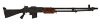
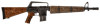
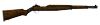
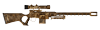
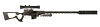

На главную Оружие Об игре Купить в Steam
На главную Оружие Об игре Купить в Steam
| Место в топе | Фото | Название | Урон | Урон в секунду | Боеприпасы | Обойма | Стоймость | Требования к навыкам |
| 1 |  | Автоматическая винтовка | 40 | 240 | Патрон кал .308 | 20 | 4500 | Оружие:0, Сила:8 |
| 2 |  | Винтовка выживающего | 48 | 187.2 | 12.7mm | 10 | 5400 | Оружие:75, Сила:4 |
| 3 |  | Машина | 72 | 144 | Патрон кал .308 | 8 | 2800 | Оружие:0, Сила:6 |
| 4 |  | Винтовка скаута гобийской кампании | 48 | 102.9 | Патрон кал .308 | 6 | 6200 | Оружие:75, Сила:6 |
| 5 |  | Снайперская винтовка с глушителем | 62 | 99.6 | Патрон кал .308 | 5 | 6100 | Оружие:75, Сила:6 |
| Оружие | Местонахождение |
| Автоматическая винтовка | Винтовку можно найти в полицейском участке Виллы в комнате контрабанды, там же можно найти патроны к ней. Вилла на крыше здания возле тайника Дина. Двигаться нужно от фонтана с Верой(в самом начале) на восток и перед фонтаном налево во двор. Через магазин Gift Shop по лестнице наверх первая дверь слева. И через густое облако по крыше. За воротами во дворе Салида-дель-Соль рядом с тайником Дина возле фонтана с множеством монет. Также её можно найти на подстанции «Пуэста-дель-Соль». И в финале, в оружейном шкафу возле стола с золотом. Встречается в закрытых шкафах (редко). |
| Винтовка выживающего | Это оружие можно найти в каньоне Зайон, в местечке Ред-Гейт на одном из выступов, образующих арку над дорогой к пристани Ред-Репидз, в вещмешке, обозначенном как «Сумка Уцелевшего», рядом со скелетом. В округе могут быть гигантские касадоры и зелёные гекконы. В ходе квеста «Перебить Белые Ноги» винтовка может быть подобрана (и использована) одним из Белоногих в этой локации. |
| Машина | Винтовка находится в лагере Маккарран и принадлежит сержанту Контрерасу. Выдаётся в качестве награды по завершению неотмечаемого квеста «Сделка с Контрерасом». |
| Винтовка скаута гобийской кампании | Винтовка находится на снайперской позиции, к западу от Коттонвуд-Коув, — в ящике для оружия, закрытом на «очень сложный» замок («Взлом» 100). |
| Снайперская винтовка с глушителем | Винтовка стоит, прислонённая к стене в углу, рядом с ящиком для боеприпасов, на верхнем этаже разрушенного здания к северу от лагеря «Малая Янцзы». |